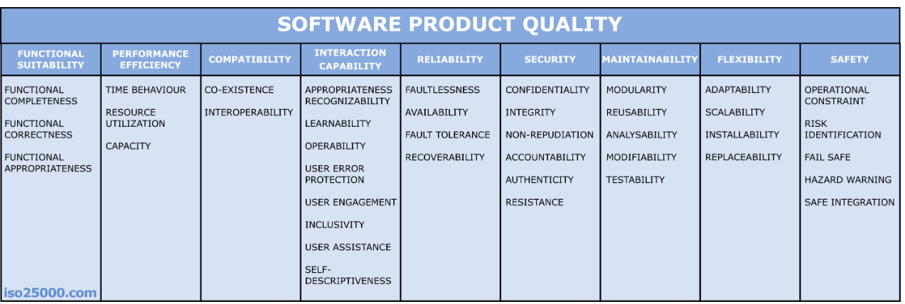

소프트웨어 품질 모델 및 표준¶
품질 요소들을 체계적으로 정리·평가하기 위한 "공식 분류 체계"
발전 흐름: McCall(1977) → FURPS → ISO 9126 → ISO 25010
McCall의 FCM 모델¶
- 가장 초기(1977)의 품질 모델. 3계층 구조.
- Factor(품질 요소) → Criteria(평가 기준) → Metric(측정 지표) 로 나눠 추상적 품질을 점차 측정 가능한 수치로 내려가게 함.
- 품질을 3가지 관점으로 분류:
- 제품 운영 (Operation): 정확성·신뢰성·효율성·무결성·사용성
- 제품 수정 (Revision): 유지보수성·유연성·시험성
- 제품 전이 (Transition): 이식성·재사용성·상호운용성
HP의 FURPS 모델¶
- 품질 요소를 5가지 머리글자로 분류:
- Functionality (기능성)
- Usability (사용성)
- Reliability (신뢰성)
- Performance (성능)
- Supportability (지원성: 유지보수·확장 등)
- 뒤에 '+'를 붙인 FURPS+ 는 설계·구현·인터페이스 제약 등을 추가.
ISO/IEC 9126 품질 모델¶
- 1991년 제정된 국제 표준. ISO 25010의 전신.
- 6개 특성: 기능성·신뢰성·사용성·효율성·유지보수성·이식성
- 한계: 보안·호환성을 독립 특성으로 다루지 못함 → 25010으로 개정됨.
ISO/IEC 25010 품질 모델¶
- 2011년 제정. 현재의 사실상 국제 표준 (SQuaRE 시리즈).
- 9126을 확장해 보안성과 호환성을 독립 특성으로 승격한 게 핵심 변화.
- 제품 품질 모델: 8개 특성 (각각 세부특성으로 다시 분할)

| 특성 | 의미 |
|---|---|
| 기능 적합성 | 명시·암묵적 요구를 충족하는 기능을 제공하는가 |
| 성능 효율성 | 주어진 자원으로 효율적으로 동작하는가 (시간·자원) |
| 호환성 | 다른 시스템과 정보 교환·공존이 가능한가 |
| 사용성 | 사용자가 쉽고 효과적으로 사용할 수 있는가 |
| 신뢰성 | 정해진 조건에서 안정적으로 기능을 수행하는가 |
| 보안성 | 데이터를 보호하고 인가된 접근만 허용하는가 |
| 유지보수성 | 수정·수리·업데이트가 쉬운가 |
| 이식성 | 다른 환경으로 쉽게 옮길 수 있는가 |
- 이 외에 사용 품질(Quality in Use) 모델 5개 특성을 별도로 둠 (실제 사용 맥락에서 사용자가 겪는 결과 품질).
소프트웨어 품질 관리¶
정량적 품질 개선¶
- 품질을 "느낌"이 아니라 숫자(메트릭)로 측정해 개선하는 접근.
- 결함 밀도, 코드 커버리지, 순환 복잡도 등을 측정 → 목표치와 비교 → 개선.
- 측정해야 관리할 수 있다는 발상.
정보 저장소 (Repository)¶
- 프로젝트에서 나온 데이터(결함·일정·공수·메트릭 등)를 모아두는 저장소.
- 과거 데이터를 축적해 추정·예측·의사결정의 근거로 사용.
- (1단원 "프로젝트 데이터 관리 수준"과 연결)
예측적 품질 관리¶
- 축적된 데이터로 미래의 품질·결함을 미리 예측해 선제 대응.
- 결함이 많이 날 모듈을 미리 식별, 일정·비용 위험을 사전 예측 등.
- 사후 수습이 아니라 사전 예방으로 전환하는 것.
❓ 궁금한 점¶
Q. 품질 모델이 하나로 통일되지 않고 여러 개 존재하는 이유는?
Q. 실무에서는 어떤 표준을 가장 많이 따르는가?
Q. 블랙박스 방식과 화이트박스 방식은 무엇인가?